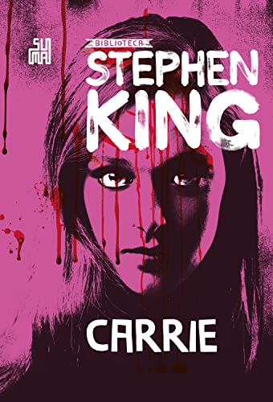

Stephen Edwin King, um renomado escritor norte-americano, é reconhecido por suas obras no gênero do terror, ficção sobrenatural, suspense, ficção científica e fantasia. Nascido em 21 de setembro de 1947, em Portland, Maine, EUA, King se estabeleceu como um dos autores mais vendidos e influentes de todos os tempos. Com uma carreira literária impressionante, King cativou milhões de leitores em todo o mundo. Seus livros conquistaram um enorme sucesso comercial, ultrapassando a marca de 400 milhões de cópias vendidas em mais de 40 países. Além disso, ele é reconhecido como o nono autor mais traduzido em todo o mundo, o que destaca a popularidade global de suas obras.
| Capa | Nome do Livro | Nota Média de Avaliação | Data de Lançamento |
|---|---|---|---|
|  | Carrie |
4.6/5.0 | 5 de abril de 1974 |
 |
O Cemitério |
4.8/5.0 | 14 de novembro de 1983 |
A Hora do Lobisomen |
4.7/5.0 | novembro de 1983 | |
 |
It - A Coisa |
4.8/5.0 | 15 de setembro de 1986 |
 |
O Iluminado |
4.8/5.0 | 28 de janeiro de 1977 |